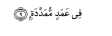

Sacred Texts Islam Index
Hypertext Qur'an Unicode Palmer Pickthall Yusuf Ali English Rodwell
Sūra CIV.: Humaza, or the Scandal-monger. Index
Previous Next

The Holy Quran, tr. by Yusuf Ali, [1934], at sacred-texts.com
Sūra CIV.: Humaza, or the Scandal-monger.
Section 1
1. Waylun likulli humazatin lumazatin
1. Woe to every
(Kind of) scandal-monger
And backbiter,
2. Allathee jamaAAa malan waAAaddadahu
2. Who pileth up wealth
And layeth it by,
3. Yahsabu anna malahu akhladahu
3. Thinking that his wealth
Would make him last
For ever!
4. Kalla layunbathanna fee alhutamati
4. By no means! He will
Be sure to be thrown into
That which Breaks to Pieces.
5. And what will explain
To thee That which Breaks
To Pieces?
6. (It is) the Fire
Of (the Wrath of) God
Kindled (to a blaze),
7. Allatee tattaliAAu AAala al-af-idati
7. The which doth mount
(Right) to the Hearts:
8. lnnaha AAalayhim mu/sadatun
8. It shall be made
Into a vault over them,

9. In columns outstretched.